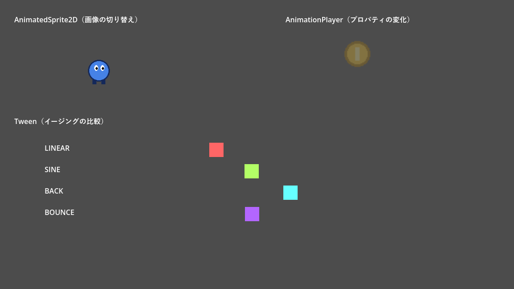
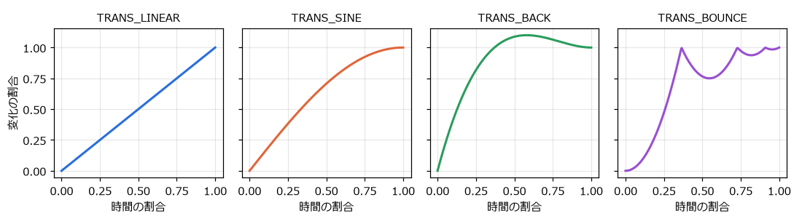
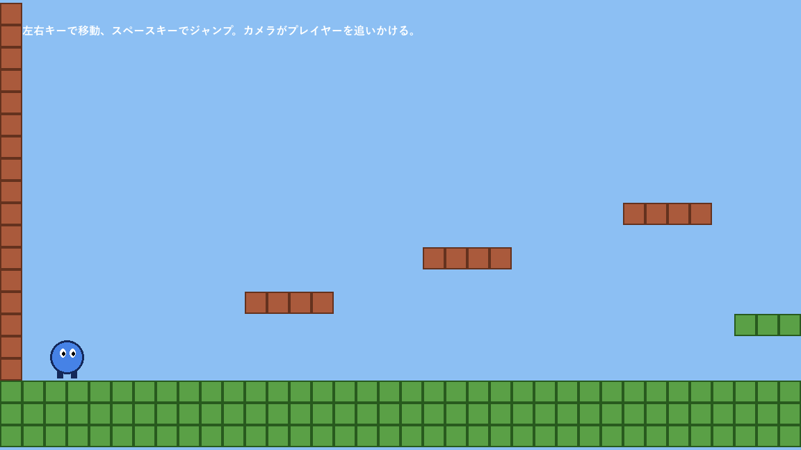

第 12 章 描画とアニメーション
本章では、画像の表示、描画の順番、3 種類のアニメーションの方法、タイルマップによるステージ作り、カメラの使い方を説明する。サンプルは chapter12 フォルダーにある。
画像を表示する
画像の表示には Sprite2D を使う。「テクスチャ」（texture）に画像ファイルを設定すると、ノードの位置を中心に画像が表示される。
プロパティ |
内容 |
|---|---|
テクスチャ（texture） |
表示する画像 |
中央（centered）、オフセット（offset） |
画像のどこをノードの位置に合わせるか |
水平反転（flip_h）、垂直反転（flip_v） |
画像を左右・上下に反転する。キャラクターの向きを変えるときに使う。 |
横フレーム数（hframes）、縦フレーム数（vframes）、フレーム（frame） |
1 枚の画像に複数のコマを並べた画像（スプライトシート）を分割し、表示するコマを選ぶ。 |
変調（modulate） |
色を掛け合わせる。半透明にしたり、赤く点滅させたりできる。 |
画像ファイルは、プロジェクトのフォルダーに置くと自動でインポートされる。インポートの設定は、ファイルシステムドックで画像を選び、「インポート」ドックで変更する。
Tip
ドット絵（ピクセルアート）を拡大して表示すると、既定の設定ではぼやけてしまう。プロジェクト設定の「レンダリング」→「テクスチャ」にある「キャンバスのテクスチャ」→「デフォルトのテクスチャフィルタ」を「近傍」（Nearest）にすると、拡大してもドットがくっきり表示される。
描画の順番
2D のノードは、シーンツリーの上から順に描画される。後から描画されたものが手前に表示されるので、シーンドックで下にあるノードほど手前になる。子ノードは親ノードより手前に描画される。
この順番を変えるには、次の方法がある。
Z インデックス（z_index）：値が大きいノードほど手前に描画される。シーンツリーの順番より優先される。
Y ソート（y_sort_enabled）：親ノードで有効にすると、子ノードを Y 座標の順に描画する。見下ろし型のゲームで、画面の下にいるキャラクターを手前に表示したいときに使う。
CanvasLayer：ノードを別の描画レイヤーに分ける。「レイヤー」（layer）の値が大きいほど手前に描画される。
CanvasLayerの子はカメラの影響を受けないので、スコアなどの HUD や、固定の背景に使う。
アニメーションの 3 つの方法
Godot には、動きを付ける方法が主に 3 つある。
方法 |
仕組み |
向いている用途 |
|---|---|---|
|
複数の画像を順に切り替える（パラパラ漫画）。 |
キャラクターの歩行、待機などのコマ送りのアニメーション |
|
任意のプロパティの値を、時間軸上のキーフレームで変化させる。エディターで編集する。 |
決まった動きの演出、複数のノードを連動させる動き、カットシーン |
|
プロパティの値を、開始値から終了値まで補間する。スクリプトで作る。 |
UI の出入り、ダメージを受けたときの揺れなど、その場で決まる動き |
サンプルの animation_demo.tscn では、3 つの方法を並べて表示している。


図 22 animation_demo.tscn の実行結果
AnimatedSprite2D
AnimatedSprite2D は、SpriteFrames というリソースに登録した画像を、順に切り替えて表示する。
シーンに
AnimatedSprite2Dを追加し、インスペクターのsprite_framesプロパティで「新規 SpriteFrames」を選ぶ。作られた
SpriteFramesをクリックすると、下部パネルにSpriteFramesのエディターが開く。左側のアニメーションの一覧で名前（例：
walk）を付け、右側にコマの画像をドラッグして並べる。再生速度（FPS）とループの有無も設定する。
サンプルでは、足の位置が異なる 4 枚の画像（assets/player_walk_0.png ～ player_walk_3.png）を 1 秒あたり 8 コマで切り替えている。
1extends AnimatedSprite2D
2## 左右に往復しながら歩くキャラクター。進む向きに合わせて画像を反転する。
3
4const SPEED: float = 120.0
5const LEFT_END: float = 100.0
6const RIGHT_END: float = 500.0
7
8var _direction: float = 1.0
9
10
11func _ready() -> void:
12 play("walk")
13
14
15func _process(delta: float) -> void:
16 position.x += _direction * SPEED * delta
17 if position.x > RIGHT_END or position.x < LEFT_END:
18 _direction = -_direction
19 # 元の画像は右向き。左へ進むときは左右反転して表示する。
20 flip_h = _direction < 0.0
play("walk") でアニメーションを再生し、進む向きに合わせて flip_h で画像を反転している。アニメーションの再生が終わると animation_finished シグナルが発行される（ループしない場合）。
AnimationPlayer
AnimationPlayer は、ノードのプロパティを時間とともに変化させるアニメーションを作る。位置、回転、色、表示・非表示など、インスペクターに表示されるほとんどのプロパティを対象にできる。決まった時刻に関数を呼ぶこともできる。
シーンに
AnimationPlayerを追加する。下部パネルに「アニメーション」エディターが開く。「アニメーション」ボタンから「新規」を選び、アニメーションの名前（例：
float）を付ける。長さとループの有無を設定する。動かしたいノードを選ぶ。インスペクターのプロパティの右に鍵の形のアイコンが表示されるので、それを押すと、現在の時刻にその値のキーフレームが追加される。
時刻を進めてプロパティの値を変え、もう一度鍵のアイコンを押す。キーフレームの間の値は自動で補間される。
サンプルの FloatingCoin では、2 秒のループするアニメーションで、コインの位置（上下に浮く）と modulate（薄くなる）を同時に変化させている。「読み込み後、自動再生」を設定したので、シーンが始まると自動で再生される。スクリプトからは $AnimationPlayer.play("float") で再生できる。
キャラクターの状態（待機、歩行、ジャンプなど）に応じてアニメーションを切り替える処理が複雑になってきたら、AnimationTree ノードで状態遷移（ステートマシン）として管理する方法もある。
Tween
Tween は、プロパティの値を開始値から終了値まで、指定した時間をかけて変化させる。スクリプトで作るので、実行時に決まる値（クリックした位置へ移動するなど）にも使える。
1var tween := create_tween()
2# 0.5 秒かけて x 座標を 400 にする
3tween.tween_property($Box, "position:x", 400.0, 0.5)
4# 続けて、0.3 秒かけて透明にする
5tween.tween_property($Box, "modulate:a", 0.0, 0.3)
6# 最後にノードを削除する
7tween.tween_callback($Box.queue_free)
create_tween() で Tween を作り、tween_property() で変化させるプロパティを追加する。"position:x" のように : で区切ると、プロパティの成分だけを対象にできる。追加した処理は順番に実行される。同時に実行したい場合は、tween.parallel() の後に追加するか、set_parallel() を使う。
Tween は、作ったノードに結び付いている。ノードが削除されると、Tween も止まる。
変化の仕方（イージング）は、set_trans() と set_ease() で指定する。


図 23 主なイージングの変化の仕方（EASE_OUT の場合）
TRANS_LINEAR は一定の速さで変化する。TRANS_SINE は滑らかに減速する。TRANS_BACK は目標を少し行き過ぎてから戻る。TRANS_BOUNCE は目標で何度か跳ねる。set_ease() には、ゆっくり始まる EASE_IN、ゆっくり終わる EASE_OUT、両方の EASE_IN_OUT などを指定する。
1extends Node2D
2## イージング（Tween.TransitionType）の違いを比較するサンプル。
3## 4 つの四角形を、同じ時間で同じ距離だけ異なるイージングで動かす。
4
5const DISTANCE: float = 400.0
6const DURATION: float = 1.5
7
8## 比較するイージングと表示名
9const TRANSITIONS: Array[Array] = [
10 [Tween.TRANS_LINEAR, "LINEAR"],
11 [Tween.TRANS_SINE, "SINE"],
12 [Tween.TRANS_BACK, "BACK"],
13 [Tween.TRANS_BOUNCE, "BOUNCE"],
14]
15
16
17func _ready() -> void:
18 for i in TRANSITIONS.size():
19 var box := ColorRect.new()
20 box.size = Vector2(32, 32)
21 box.position = Vector2(0, i * 48)
22 box.color = Color.from_hsv(i / 4.0, 0.6, 1.0)
23 add_child(box)
24
25 var label := Label.new()
26 label.text = TRANSITIONS[i][1]
27 label.position = Vector2(-100, i * 48)
28 add_child(label)
29
30 # 往復を無限に繰り返す Tween を作る。
31 var transition: Tween.TransitionType = TRANSITIONS[i][0]
32 var tween := create_tween().set_loops()
33 tween.set_trans(transition).set_ease(Tween.EASE_OUT)
34 tween.tween_property(box, "position:x", DISTANCE, DURATION)
35 tween.tween_interval(0.5)
36 tween.tween_property(box, "position:x", 0.0, DURATION)
37 tween.tween_interval(0.5)
set_loops() を引数なしで呼ぶと、Tween が無限に繰り返される。tween_interval() は、指定した秒数だけ待つ処理を追加する。
タイルマップ
ステージの地形は、小さな正方形の画像（タイル）を格子状に並べて作ることが多い。Godot では TileMapLayer ノードを使う。
注釈
Godot 4.2 までは TileMap ノードを使っていたが、4.3 で TileMapLayer に置き換えられた。古い解説記事を参考にする場合は注意する。複数の層（地面、装飾など）が必要な場合は、TileMapLayer ノードを複数並べる。
タイルセット
TileMapLayer で使うタイルの種類は、TileSet リソースで定義する。
TileMapLayerを追加し、インスペクターの「タイルセット」（tile_set）で「新規 TileSet」を選ぶ。作られたTileSetの「タイルサイズ」（tile_size）でタイルの大きさを設定する。下部パネルの「TileSet」エディターを開き、タイルを並べた画像（アトラス）をドラッグする。画像がタイルの大きさで分割される。
当たり判定が必要な場合は、
TileSetのインスペクターで「物理レイヤー」を追加し、「TileSet」エディターで各タイルに衝突形状を描く。
サンプルの chapter12/tileset.tres は、32 × 32 ピクセルの地面とレンガの 2 種類のタイルを定義し、どちらにも四角い衝突形状を付けたタイルセットである。
タイルを配置する
通常は、TileMapLayer を選んで下部パネルの「TileMap」エディターを開き、タイルを選んでビューポート上を塗るようにして配置する。
スクリプトから set_cell(座標, ソースID, アトラス座標) で配置することもできる。サンプルでは、文字で書いた配置図からタイルを並べている。
1extends Node2D
2## 文字で書いたステージの配置図から TileMapLayer にタイルを並べるサンプル。
3## エディターで手作業でタイルを塗る代わりに、コードで配置する方法を示す。
4
5## ステージの配置図。# は地面、B はレンガ、それ以外は空白。1 文字が 1 タイル（32 x 32 ピクセル）。
6const LEVEL: Array[String] = [
7 "B B",
8 "B B",
9 "B B",
10 "B B",
11 "B B",
12 "B B",
13 "B B",
14 "B BBBB B",
15 "B B",
16 "B BBBB B",
17 "B BBB B",
18 "B BBBB B",
19 "B ### B",
20 "B BBBB B",
21 "B #### B",
22 "B B",
23 "B B",
24 "############################################################",
25 "############################################################",
26 "############################################################",
27]
28const SOURCE_ID: int = 0 # タイルセット内のアトラスの番号
29## 文字とアトラス内のタイル座標の対応
30const TILES: Dictionary[String, Vector2i] = {
31 "#": Vector2i(0, 0),
32 "B": Vector2i(1, 0),
33}
34
35@onready var _ground: TileMapLayer = $Ground
36@onready var _camera: Camera2D = $Player/Camera2D
37
38
39func _ready() -> void:
40 for row in LEVEL.size():
41 var line := LEVEL[row]
42 for column in line.length():
43 var symbol := line[column]
44 if TILES.has(symbol):
45 _ground.set_cell(Vector2i(column, row), SOURCE_ID, TILES[symbol])
46
47 # カメラがステージの外を映さないように、移動範囲を制限する。
48 var used := _ground.get_used_rect()
49 var tile_size := _ground.tile_set.tile_size
50 _camera.limit_left = used.position.x * tile_size.x
51 _camera.limit_top = used.position.y * tile_size.y
52 _camera.limit_right = used.end.x * tile_size.x
53 _camera.limit_bottom = used.end.y * tile_size.y
set_cell() の第 1 引数はタイル単位の座標（Vector2i）、第 2 引数はタイルセット内の画像（ソース）の番号、第 3 引数はその画像の中でのタイルの位置である。get_used_rect() は、タイルが置かれている範囲をタイル単位で返す。


図 24 tilemap_demo.tscn の実行結果
カメラ
画面より広いステージでは、Camera2D を使って画面に映す範囲を動かす。Camera2D を追いかけたいノード（プレイヤー）の子にすると、プレイヤーが常に画面の中央に映る。
プロパティ |
内容 |
|---|---|
ズーム（zoom） |
表示の拡大率。 |
制限値（limit_left、limit_top、limit_right、limit_bottom） |
カメラが映す範囲の限界。ステージの外が映らないようにする。 |
position_smoothing_enabled |
有効にすると、カメラが目標を滑らかに追いかける。 |
オフセット（offset） |
カメラの位置をずらす。画面を揺らす演出に使える。 |
tilemap_demo.gd では、タイルが置かれた範囲からカメラの限界を計算して設定している。1 つのシーンに Camera2D が複数ある場合は、make_current() を呼んだカメラが使われる。
パーティクル
爆発の火花、煙、雨のように、多数の小さな粒を使う効果には、パーティクル（particle）を使う。GPUParticles2D は GPU で計算するので大量の粒を扱える。CPUParticles2D は CPU で計算し、古い環境でも確実に動く。どちらも、粒の数、寿命、初速、重力、色の変化などをインスペクターで設定する。本書では詳しく扱わないが、第 17 章 チュートリアル：岩よけゲームを作る のゲームに爆発の効果を追加するなどして試してみるとよい。